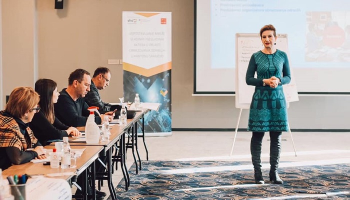

<section id="onama" class="section-padding">
    <div id="about" class="about">

          <div class="row display_boxflex">
            <div class="col-xl-6 col-lg-6 col-md-6 col-sm-12">

              <div class="about-box">
                <h2>O nama</h2>
                <p>Funkcionalno partnerstvo javnog, privatnog i civilnog sektora u razvoju vještina odraslih osoba ključno je za uspjeh u implementaciji politika i napora svih aktera u oblasti cjeloživotnog učenja i obrazovanja odraslih. Kroz višegodišnji rad na obrazovanju odraslih osoba na području BPK goražde uspostavljeno je partnerstvo najznačajnijih aktera iz javnog, privatnog i nevladinog sektora koje je primarno funkcionisalo kao mehanizam koordinacije aktivnosti koje su se implementirale u okviru projekata i programa. <br><br>Funkcionalno partnerstvo javnog, privatnog i civilnog sektora u razvoju vještina odraslih osoba ključno je za uspjeh u implementaciji politika i napora svih aktera u oblasti cjeloživotnog učenja i obrazovanja odraslih.vanju odraslih osoba na području BPK goražde uspostavljeno je partnerstvo najznačajnijih aktera iz javnog, privatnog i nevladinog sektora koje je primarno funkcionisalo kao mehanizam koordinacije aktivnosti koje su se implementirale u okviru projekata i programa. <br>Funkcionalno partnerstvo javnog, privatnog i civilnog sektora u razvoju vještina odraslih osoba ključno je za uspjeh u implementaciji politika i napora svih aktera u oblasti cjeloživotnog učenja i obrazovanja odraslih. Kroz višegodišnji rad na obrazovanju odraslih osoba na području.</p>
                <a routerLink="/about-us"
                >PARTNERI</a>
              </div>
            </div>
            <div class="col-xl-6 col-lg-6 col-md-6 col-sm-12">
              <div id="carouselExampleControls1" class="carousel slide" data-bs-ride="carousel">
                <div class="carousel-inner">
                  <div class="carousel-item active">
                    
              </div>
              <div class="carousel-item">
                    
              </div>
              <div class="carousel-item">
                
          </div>

              <button class="carousel-control-prev" type="button" data-bs-target="#carouselExampleControls1" data-bs-slide="prev">
                <span class="carousel-control-prev-icon" aria-hidden="true"></span>
                <span class="visually-hidden">Previous</span>
              </button>
              <button class="carousel-control-next" type="button" data-bs-target="#carouselExampleControls1" data-bs-slide="next">
                <span class="carousel-control-next-icon" aria-hidden="true"></span>
                <span class="visually-hidden">Next</span>
              </button>
      </div>
      </div>

  </div>
          </div>
    </div>
    </section>
